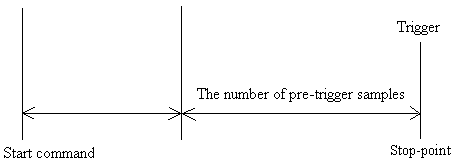
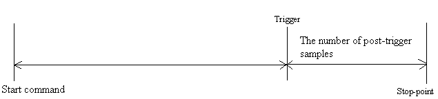
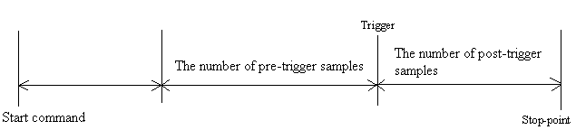

The ADMEMSMPLREQ structure
contains sampling condition settings. This structure is used by the AdMemSetSamplingConfig
function.
- C
typedef struct {
ULONG ulChCount;
ADSMPLCHREQ SmplChReq[256];
ULONG ulSingleDiff;
float
fSmplFreq;
ULONG ulStopMode;
ULONG ulPreTrigDelay;
ULONG ulPostTrigDelay;
ADTRIGCHREQ TrigChReq[2];
ULONG ulATrgMode;
ULONG ulATrgPulse;
ULONG ulStopTrigEdge;
ULONG ulEClkEdge;
ULONG ulFastMode;
ULONG ulStatusMode;
ULONG ulErrCtrl;
} ADMEMSMPLREQ, *PADMEMSMPLREQ
- Visual Basic
Type ADMEMSMPLREQ
ulChCount As Long
SmplChReq(0 To 255) As ADSMPLCHREQ
ulSingleDiff As Long
fSmplFreq As Single
ulStopMode As Long
ulPreTrigDelay As Long
ulPostTrigDelay As Long
TrigChReq(0 To 1) As ADTRIGCHREQ
ulATrgMode As Long
ulATrgPulse As Long
ulStopTrigEdge As Long
ulEClkEdge As Long
ulFastMode As Long
ulStatusMode As Long
ulErrCtrl As Long
End Type
- Delphi
type
ADMEMSMPLREQ = record
ulChCount: Cardinal;
SmplChReq: array[0..255] of ADSMPLCHREQ;
ulSingleDiff : Cardinal;
fSmplFreq: Single;
ulStopMode: Cardinal;
ulPreTrigDelay: Cardinal;
ulPostTrigDelay: Cardinal;
TrigChReq: array[0..1] of ADTRIGCHREQ;
ulATrgMode : Cardinal;
ulATrgPulse : Cardinal;
ulStopTrigEdge: Cardinal;
ulEClkEdge : Cardinal;
ulFastMode : Cardinal;
ulStatusMode : Cardinal;
ulErrCtrl : Cardinal;
end;
Member
|
Description
|
| ulChCount |
Specifies the number of channels to sample.
It is in the range of 1 through the number of channels that
the board provides.
The default setting value is 1. Specifies the channel numbers in the ADSMPLCHREQ
structure.
* For the CTP/CPZ-360810, the number of channels
is fixed to 2-channel. |
| |
|
| SmplChReq |
Specifies an array of the ADSMPLCHREQ
structure containing the sampling conditions for
the channel. |
| |
|
| ulSingleDiff |
Specifies the input configuration.
| Code |
Value |
Description |
| AD_INPUT_SINGLE |
1 |
Single-ended |
| AD_INPUT_DIFF |
2 |
Differential |
The default setting is dependent on the board. It is retrieved by
calling the AdMemGetSamplingConfig
function after the board is opened. |
| |
|
| fSmplFreq |
Specifies the sampling rate in Hz. You can specify this
from 0.48f to the maximum sampling rate that the board provides. To use
the external clock, please specify 0.0f.
The default setting value is dependent on the device. It is retrieved by
calling the AdMemGetSamplingConfig
function after the device is opened.
|
| |
|
| ulStopMode |
Specifies the stop condition of sampling (stop-trigger).
The terminal for external trigger is dependent on the device. Refer to
"Attentions,"
for more details. One or more codes can be specified.
| Code |
Value |
Description |
| AD_EXTTRG |
2 |
External trigger |
| AD_STOP_DI_EQ |
00100000h |
DI pattern matching (*2) |
| AD_STOP_SOFT |
00200000h |
Soft stop (*1) |
| AD_STOP_P1 |
00000400h |
Level 1 low-to-high transition |
| AD_STOP_M1 |
00000800h |
Level 1 high-to-low transition |
| AD_STOP_D1 |
00001000h |
Level 1 high-to-low transition |
| AD_STOP_P2 |
00002000h |
Level 2 low-to-high transition |
| AD_STOP_M2 |
00004000h |
Level 2 high-to-low transition |
| AD_STOP_D2 |
00008000h |
Level 2 low-to-high transition or high-to-low
transition |
|
| |
|
| ulPreTrigDelay |
Specifies the number of pre-trigger samples from 1 through
1073741824. (*3)
When you specify 0, the pre-trigger delay is not used.
The default setting value is 0. |
| |
|
| ulPostTrigDelay |
Specifies the number of post-trigger samples from 1
through the amount of your memory every sample. When you specify 0, the
post-trigger delay is not used. The default setting value is 1024. |
| |
|
| TrigChReq |
Specifies an array of the ADTRIGCHREQ
structure to set the analog trigger conditions.
This member is available when the analog trigger is specified to
ulStopMode or ulATrgMode of the AdSetOutMode
function.
|
Array Element |
Description |
| TrigChReq[0] |
Trigger level 1 |
| TrigChReq[1] |
Trigger level 2 |
|
| |
|
| ulATrgMode |
Specifies the pulse output condition by analog trigger
notification. AD_DISABLE cannot be specified with other codes. This
member is applicable to boards that have analog trigger notification
pulse function.
| Code |
Value |
Description |
| AD_DISABLE |
80000000 |
No pulse output (default setting) |
| AD_EDGE_P1 |
0010h |
Level 1 low-to-high transition |
| AD_EDGE_M1 |
0020h |
Level 1 high-to-low transition |
| AD_EDGE_D1 |
0040h |
Level 1 low-to-high transition or high-to-low
transition |
| AD_EDGE_P2 |
0080h |
Level 2 low-to-high transition |
| AD_EDGE_M2 |
0010h |
Level 2 high-to-low transition |
| AD_EDGE_D2 |
0200h |
Level 2 low-to-high transition or high-to-low
transition |
|
| |
|
| ulATrgPulse |
Specifies the pulse polarity of the analog trigger
notification pulse.
This member is applicable to boards that have analog trigger
notification pulse function.
| Code |
Value |
Description |
| AD_LOW_PULSE |
1 |
Low pulse (default setting) |
| AD_HIGH_PULSE |
2 |
High pulse |
|
| |
|
| ulStopTrigEdge |
Specifies the edge polarity of the external trigger. This
member is available when the external trigger is specified to ulStopMode.
| Code |
Value |
Description |
| AD_DOWN_EDGE |
1 |
Falling edge (default setting) |
| AD_UP_EDGE |
2 |
Rising edge |
|
| |
|
| ulEClkEdge |
Specifies the edge polarity of the external clock signal.
This member is available when 0.0f is set to fSmplFreq.
| Code |
Value |
Description |
| AD_DOWN_EDGE |
1 |
Falling edge (default setting) |
| AD_UP_EDGE |
2 |
Rising edge |
|
| |
|
| ulFastMode |
Specifies the operation clock mode. This member is
applicable to double-clocked mode.
| Code |
Value |
Description |
| AD_NORMAL_MODE |
1 |
Normal mode (default setting) |
| AD_FAST_MODE |
2 |
Double-clocked mode |
|
| |
|
| ulStatusMode |
Specifies the additional status to the
sampling data. This member is available for boards that support the bus
master sampling status mode. (*5)
| Code |
Value |
Description |
| AD_NO_STATUS |
1 |
Adds no bus master sampling status (default
setting). |
| AD_ADD_STATUS |
2 |
Adds bus master sampling status. |
|
| |
|
| ulErrCtrl |
Specifies the process when the sampling error occurs.
| Code |
Value |
Description |
| AD_FREERUN |
1 |
Continues the sampling even if any errors
occur. (default setting) |
| AD_STOP_ORER |
2 |
Stops sampling because of an overrun error
(*4) |
|
*1
When soft trigger is specified, AdStartSampling
cannot process synchronously.
A soft trigger is called by AdStopSampling
function.
*2 The stop trigger occurs when the DI pattern
matching trigger is consistent with the DI pattern condition that configured
by using the AdMemSetDiPattern
function.
*3
For the pre-trigger delay and post-trigger delay, the
number of samplings is recognized as the number of samplings between
stop-trigger and pre-trigger or post-trigger. The sum of the number of
pre-trigger samples and post-trigger samples must be configured 4194304 or
less. The following setting cannot be configured.
ulPreTrigDelay = 0, ulPostTrigDelay = 0
-Pre-Trigger with No Post-Trigger Delay

-No Pre-Trigger with Post-Trigger Delay

-Pre-Trigger with Post-Trigger Delay

*4 The
data at the time of an overrun error occurs cannot be retrieved.
*5
When configuring the sampling data to add the sampling status information, the
format is as follows.
CH1
| bit15 |
bit14 |
bit13 |
bit12 |
bit11 |
bit10 |
bit9 |
bit8 |
bit7 |
bit6 |
bit5 |
bit4 |
bit3 |
bit2 |
bit1 |
bit0 |
| 0 |
0 |
DI4 |
DI3 |
DI2 |
DI1 |
10-bit analog data |
CH2
| bit15 |
bit14 |
bit13 |
bit12 |
bit11 |
bit10 |
bit9 |
bit8 |
bit7 |
bit6 |
bit5 |
bit4 |
bit3 |
bit2 |
bit1 |
bit0 |
| TRG |
Over |
DI8 |
DI7 |
DI6 |
DI5 |
10-bit analog data |
| TRG status |
0: Pre-trigger
sample is running.
1: Post-trigger sample is running. |
| |
|
| Over status |
0: No overrun
error
1: Overrun error |